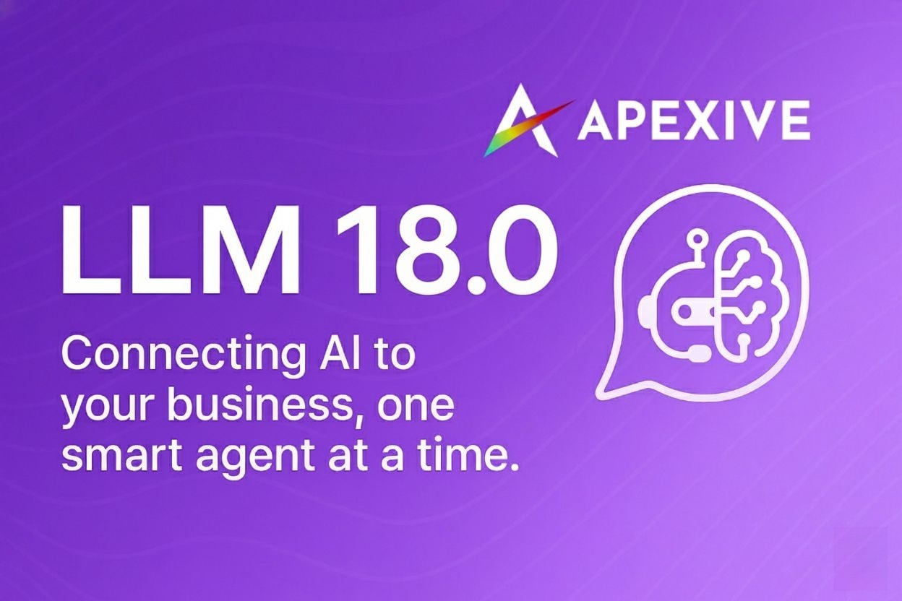

LLM Assistant Module
This module adds assistant capabilities to the LLM integration, allowing for specialized AI assistants with dedicated tools and configurations.
The LLM Assistant module extends the core LLM integration by providing a framework for creating and managing specialized AI assistants. Each assistant can have its own configuration, tools, and system prompts, enabling more targeted AI assistance for different use cases.
Key Features
- ✓ Create and manage specialized AI assistants
- ✓ Assign specific models and providers to each assistant
- ✓ Configure assistant-specific tools and capabilities
- ✓ Easily switch between assistants in the chat interface
- ✓ Customize system prompts for different use cases
Assistant Management
The module provides comprehensive assistant management capabilities:
- Create assistants with specific names and descriptions
- Assign LLM providers and models to each assistant
- Configure assistant-specific tools and capabilities
- Set custom system prompts to guide assistant behavior
- Organize assistants by categories or departments
Chat Integration
Seamlessly integrate assistants into the chat interface:
- Select assistants from a dropdown in the chat header
- Switch between assistants during a conversation
- Assistant settings automatically apply to the conversation
- Visual indicators show which assistant is active
Note: This module requires the base LLM integration module to be installed.
Security
The module implements robust security features:
- Role-based access control for assistant management
- Regular users can use assistants but only managers can create/edit them
- Company-specific assistant configurations
- Audit logging for assistant usage
Prompt Template
The module uses a structured prompt template with the following variables:
- role: Defines the assistant's specific role (e.g., "Assistant Creator")
- goal: Describes the primary objective of the assistant
- background: Provides context and knowledge the assistant should have
- instructions: Detailed step-by-step guidance for the assistant
- footer: Additional important notes or reminders
Pre-configured Assistants
The module includes the following pre-configured assistants:
- Assistant Creator: Guides users through creating and configuring specialized AI assistants in Odoo, ensuring all required fields are properly set and appropriate tools are attached.
- Website Builder: Helps update website content, structure, and functionality within the Odoo system, implementing changes safely and methodically.
Use Cases
Create specialized assistants for different departments and functions:
- Customer Support Assistant: Trained to answer product questions and troubleshoot issues
- Sales Assistant: Configured to provide product recommendations and pricing information
- HR Assistant: Specialized in answering policy questions and onboarding information
- Technical Expert: Focused on providing technical documentation and code examples
Configuration
After installation:
- Navigate to LLM > Configuration > Assistants
- Create new assistants with specific providers and models
- Configure tools and system prompts for each assistant
- Assign assistants to specific user groups if needed
Integration: This module extends the core LLM functionality with assistant capabilities that can be used across all Odoo modules.
Support
For questions or support needs, please contact:
https://github.com/apexive/odoo-llm
For more information about Apexive Solutions LLC and our other projects, visit:
https://github.com/apexive/odoo-llm
2025 Apexive Solutions LLC